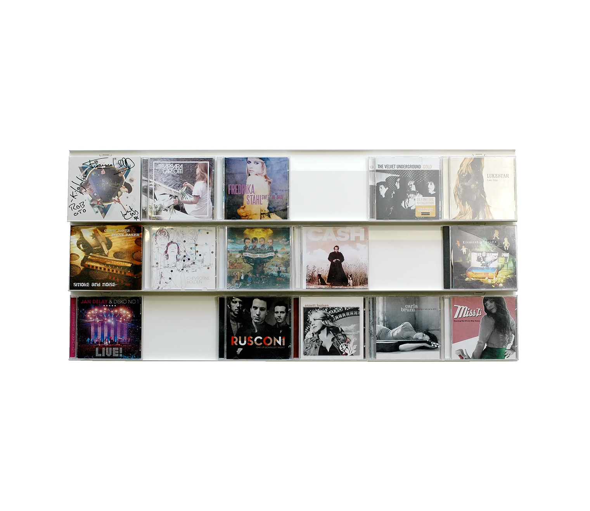
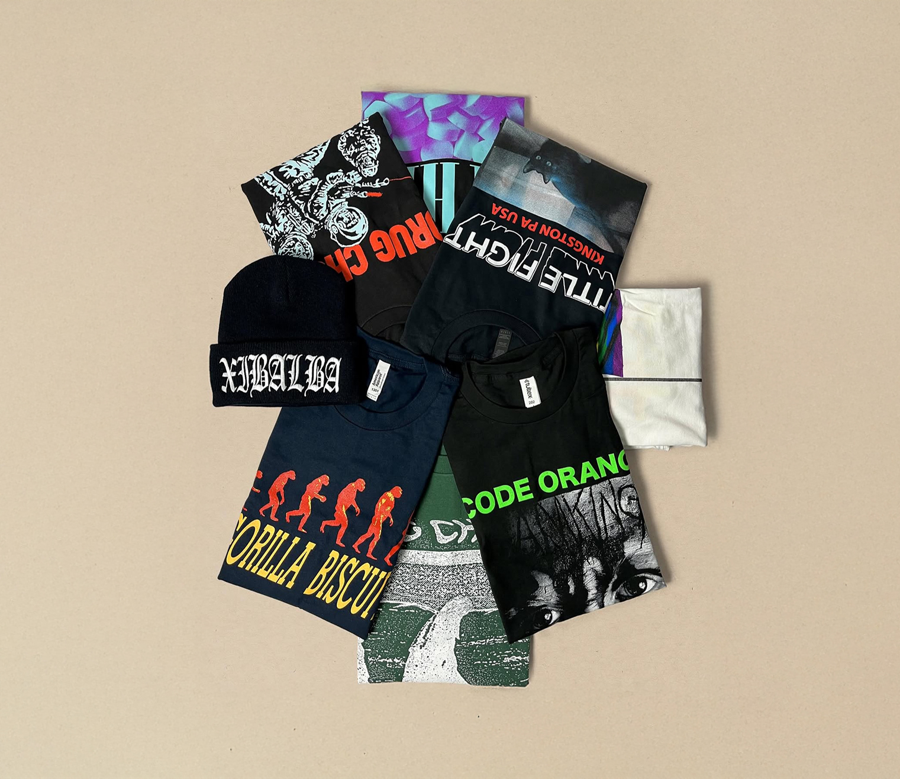

Product Offerings
New Releases

-
World's Worst "American Muscle" (Ruby Red Vinyl)
The second full-length album by Salt Lake City's Worlds Worst, 10 brand new tracks.
$25.00
-
Nihilistic Easyrider "DELUXE EDITION"
Nihilistic Easyrider is the brainchild of Narrow Head frontman Jacob Duarte—but make no mistake, he’s not going solo. DELUXE EDITION is a mixtape of sorts, a collection of songs written at various intervals throughout Duarte’s career. These songs traverse a wide-range of stylistic references, from saccharine Y2K emo and young-dumb-and-full-of pop punk to Soviet fuzz fueled alt and pure Evan Dando-core verse-chorus-verse-chorus-done pop rock.
$27.00
-
JeJune "This Afternoon's Malady" 2xLP (Red Solar Vinyl)
Second wave emo gasping at alt-rock's final breath. Jejune's sophomore and final album This Afternoons Malady showcases their love of midwest emo via a Corgan-esque wall of growling guitars. Co-produced with Chisel's Ted Leo, Malady's dozen songs mix handclaps and heartbreak in equal measure, all remastered and finally available on wax for the first time ever. You can toss that picture disc in the garbage now.
$33.00
-
Algernon Cadwallader "Trying Not To Have A Thought" (Stabilo Blue Vinyl)
Trying Not to Have a Thought isn’t just the first Algernon Cadwallader album since 2011’s Parrot Flies. It’s also the first with their original lineup.
$26.00
-
Should "Feed Like Fishes" 2xLP (Faded Green Colored Vinyl)
Compiled here for the first time is Should's 1998 debut Feed Like Fishes plus 10 period bonus tracks, on vinyl for the first time ever.
$33.00
-
Super Static Fever "Silent Dynamic Torture" (Acid Wave Vinyl)
A band that played so loud their entire fan base went deaf and never spoke of them again. Formed in 1993 in the go-nowhere exurb of San Jose, California, Super Static Fever played only a handful of gigs in their brief two year existence, punishing spectators with a tinnitus-inducing wah-wah wall of Marshall-stacked distortion.
$27.00
Vinyl

-
Michael Jackson "THRILLER"
Champaign, Illinois band Hum is re-issuing its four-album catalog. The band members oversaw every step of the re-mastering, lacquer cutting, and manufacturing stages while working with original designer Andy Mueller/OhioGirl in updating the artwork.
$39.00
-
Pink Floyd The Dark Side of the Moon (50th Anniversary Remaster) LP
One of the most iconic and influential albums ever. Originally released in March 1973.
$39.00
-
Nirvana "Bleach"
Sub Pop Records presents a non-deluxe, affordably-priced, single-LP version of Bleach, Nirvana’s debut album. Originally released in June of 1989, Bleach was re-mastered, deluxed-up and reissued in November of 2009.
$23.00
-
The Beatles - "The Beatles" (The White Album)
In November 1968, The Beatles released their groundbreaking ninth studio album, famously known as 'The White Album.' Its release, packed with iconic tracks like “Back In The U.S.S.R.,” “Dear Prudence,” and “While My Guitar Gently Weeps,” marked a significant moment in music history.
$39.00
-
Miles Davis "Kind Of Blue" (Mono 180g Vinyl)
Special mono reissue of Miles' most iconic record. Kind Of Blue is the most popular straight-jazz album of all time, the one that even those people who don't really listen to jazz but want to seem smart, hip and cultured can connect with. Almost 55 years after its initial release in August 1959, it remains the standard-bearer for an entire culture, and continues to sell in the neighborhood of 100,000 copies a year.
$27.00
-
Metallica "Master of Puppets"
Master of Puppets was originally released on March 3rd, 1986, on Elektra Records and went on to become the first Metallica album to be certified Platinum by the RIAA. The album has been certified six-times Platinum in the United States and has sold over 10 million copies worldwide.
$25.00
CDs
-
Deftones "White Pony" CD
New & improved with an added track, the second single, "Back to School (Mini Maggit)." the new enhanced CD contains a link to a Web site where the new track can be downloaded free of charge.
$12.00
-
The Strokes "Is This It" CD
Clocking in at 36 minutes, Is This It? packs it's perfect length with stellar songs that draw inspiration from all over the map.
$11.00
-
Sunny Day Real Estate "Diary" CD
Relive the raw emotion and melodic brilliance of Diary, the iconic debut album from Sunny Day Real Estate, now beautifully remastered with bonus tracks
$14.00
-
Foo Fighters "Greatest Hits" CD
2009 collection from Dave Grohl and the Foo's including two brand new tracks, 'Wheels' and 'Word Forward', both recorded with producer Butch Vig ,who also produced Grohl's former band, Nirvana.
$13.00
-
Alice in Chains: Jar Of Flies (EP) - CD
Jar of Flies is the second studio EP by the American rock band Alice in Chains, released on January 25, 1994, through Columbia Records. It is the first EP in music history to debut at number one on the Billboard 200 Chart with the first week sales exceeding 141, 000 copies in the United States.
$11.00
-
Oasis - Definitely Maybe CD
Remastered edition of Oasis' classic debut album. On it's release in August 1994, DEFINITELY MAYBE sold a record-breaking 86,000 copies in it's first week, the highest first-week sales for a debut album in Britain.
$14.00
-
Amy Winehouse - Back To Black [Limited Edition] [Bonus CD + Bonus Tracks]
Amy Winehouse brings you her second album, BACK TO BLACK, which is a truly incredible album almost beyond description. This 2 disc set offers an additional 8 tracks of live recordings, demos and B-sides.
$16.00
Merch
-
Duster Cat T-shirt
Your fav Duster Cat, now on a t-shirt. Printed on heavy-weight Comfort Color blanks.
$30.00
-
Title Fight "Shed Owl" Shirt
"Shed Owl" design printed on Navy Gildan G500
$25.00
-
Tone & Turn T-shirt
Classic logo printed on Gildan.
$15.00
-
Tone & Turn Trucker Hat/h4>
Classic Logo Trucker.
$15.00
-
Tone & Turn Tote Bag
Classic logo tote, perfect for your portable vinyl needs.
$10.00
-
Tone & Turn Sticker Pack
These ultra durable stickers will last no matter where placed.
$5.00